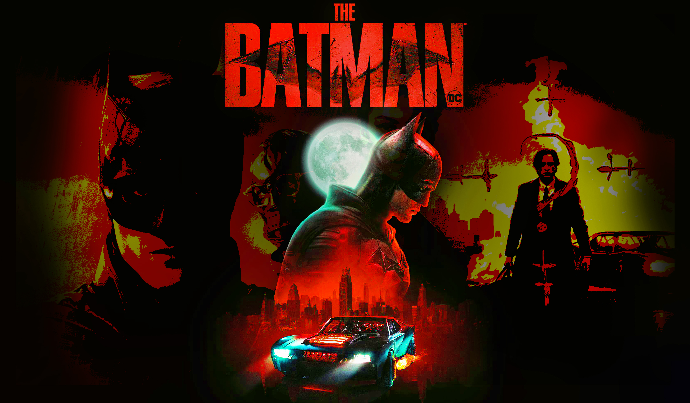
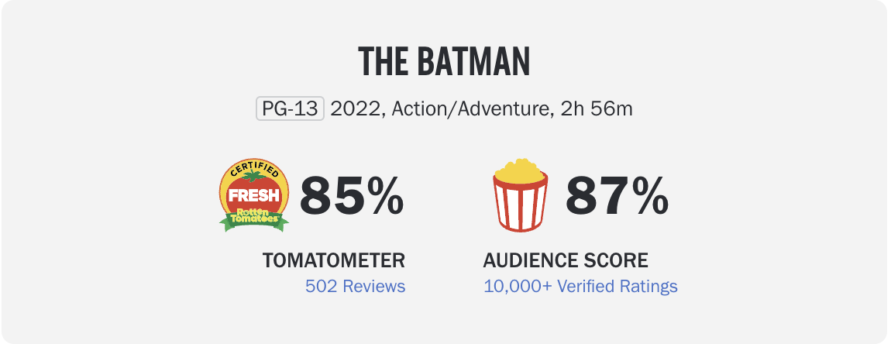

|  |
| HOME | PLOT | CAST | REVIEWS & AWARDS | REFERENCES |
| REVIEWS |
|  |
|
"Reeves, Pattison and the talented cast and crew have created a crime/action/drama extraordinaire. A close to perfect superhero film that nips at the heels of the untouchable The Dark Knight." -Dwight Brown (National Newspaper Publishers Association) 3.5/4 "A sprawling and sinuous urban detective thriller, with the intricately unhinged red-wool-on-corkboard plotting of classic film noir." --Robbie Collin (Daily Telegraph UK) 5/5
"The twists and turns, the grim Fincher feel, the growling bruised Batman and the sadistic Riddler, this big-screen blockbuster is heavy-duty and for Bat-fans with a big appetite." -Kate Rodger (NewsHub NZ) 4.5/5 AUDIENCE SAYS
|
| AWARDS |
Winner of Best Director- Matt Reeves Winner of Best Costume-
Winner of Favourite Movie-
Favourite Movie Actor- Robert Pattinson |
| Email the creator of this website- snundy3@uwo.ca |